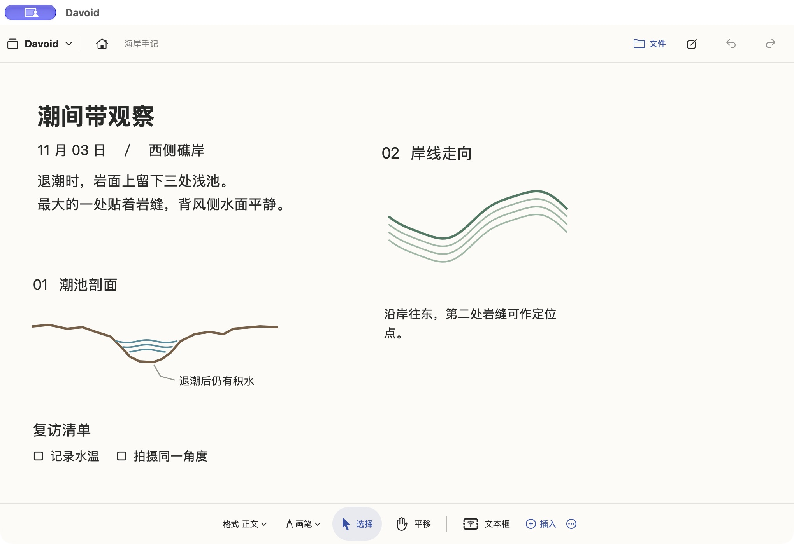

A notebook with
room to think.
Write in neat lines. Sketch across the page. Place a picture wherever it belongs. Keep it all together on one continuous canvas.
For Mac, iPad, iPhone Duo and iPhone
Davoid is in development. Public download details will appear here when available.
Write naturally.
Start typing on the page. Use Markdown, adjust text size, or add a separate text box beside your notes.
Draw freely.
Circle a sentence and the mark follows as you edit. Sketch in empty space and it stays where you put it.
Keep things together.
Add pictures, GIFs, videos, source files and folders. Move and resize them alongside your writing.
Everything on the same page.

Pick up where you left off.
Save an editable .dd project with your notes and attachments, then open it on another device. Export the paper area, a selection or all your content as a PDF.
Projects move between devices when you share the file. Notes are saved locally on each device.
Your notebook, on your device.
Davoid works without an account. Notes and attachments are stored locally. The app contains no advertising or third-party analytics.
Read the privacy policy